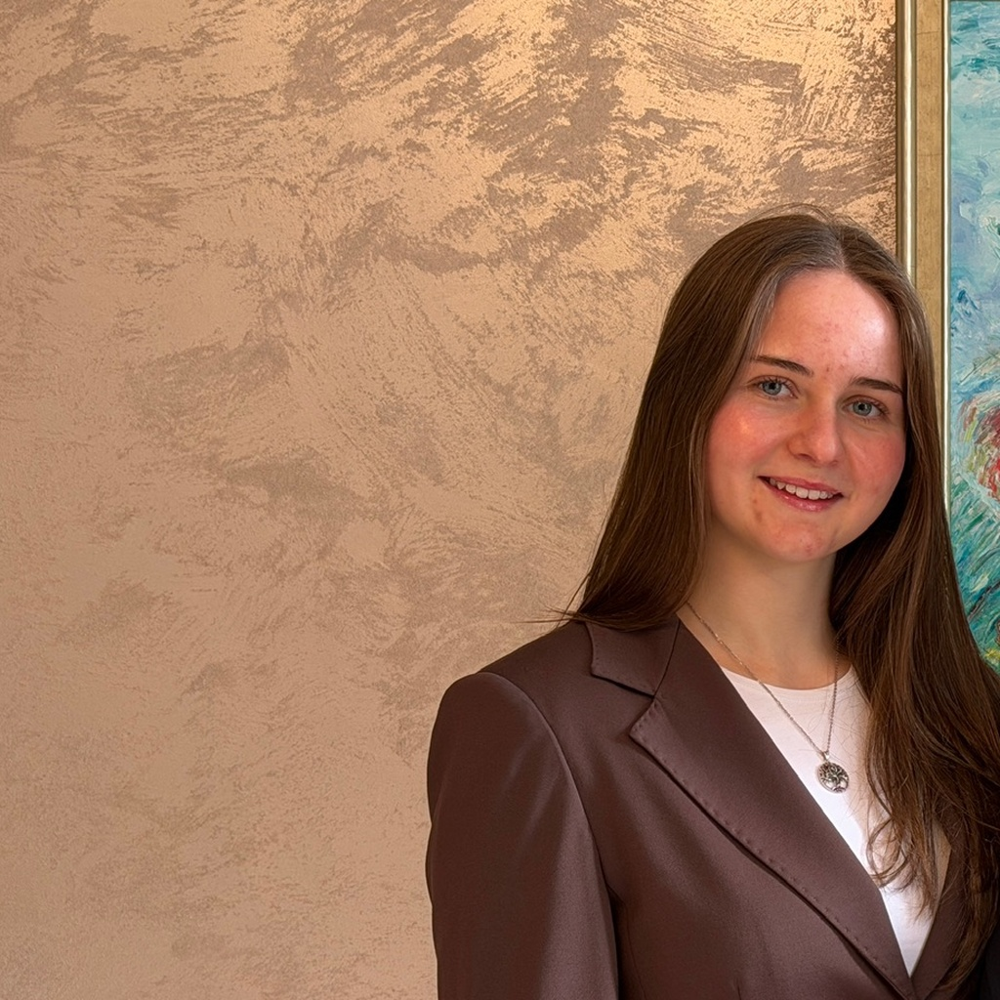
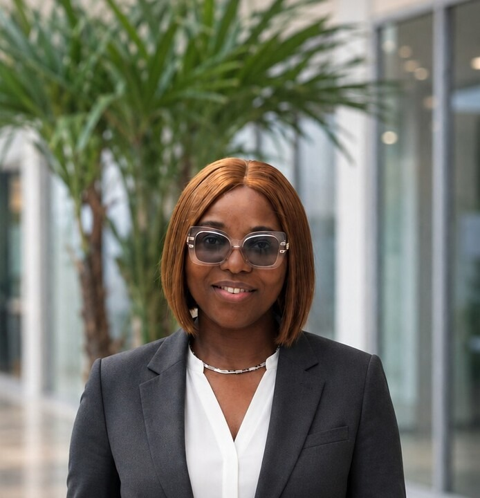

Discover the vision, people, and community driving Power of Interest UK.
At POI, we believe that each voice is unique, and every voice deserves to be heard. We build confidence, critical thinking, and empathy through the art of structured debate.
Learn to debate, and you will learn to articulate your thought process, challenge assumptions, and win with logic. Debate teaches you how to persuade, listen, and command any room.
Public speaking isn’t just about competition — it’s about having the self-assurance to stand up and make a case for what you believe in, no matter the audience.
Throughout your debate journey, you will learn to analyze multifaceted global issues from every perspective, growing into a more nuanced and engaging speaker.
Maria and Alison co-founded POI with a shared conviction: that debate training should be free, accessible, and welcoming to all students.
Maria Fargher (left) & Alison Zhao (right) • Co-Founding Directors

Driven by a deep passion for debate, Maria Fargher co-founded the charity to share the benefits of public speaking and structured discussion with her wider community. Along with Alison, she is the driving force behind the POI vision. An active debater and MUN participant for four years, she also enjoys netball and swimming. Currently entering Year 12, she studies Maths, Further Maths, Chemistry, Physics, and Economics.
Alison Zhao founded POI because of her belief in equality of opportunity in debate. She co-directs the charity, and leads POI’s vision alongside Maria. Alison has been a debater and MUN delegate for two years, and at A-Level, she studies Economics, English, History and Maths.
Our dedicated team and board members bring together expertise in debate, governance, creative direction, and non-profit management.
Alan Broad is Chair of the Board at Power of Interest. Alongside a successful career leading global technology organisations, he is passionate about helping charities grow. As Chair, Alan works to shape strategy, strengthen governance, and expand POI's impact.

Vivian Uche Okolie is a Director at POI, a dual-qualified Chartered Accountant (FCA, ACMA, CGMA) and ICAEW BFP, with an MSc in Accounting & Finance. She is a strategic finance leader experienced in reporting, planning, governance, and driving data-led decisions that support sustainable organisational growth.
Zoë Heslop manages the brand's public image and digital presence as Creative Manager of POI, helping portray the POI vision across social media and the website. She has always been drawn to debate for its power to bring together opposing viewpoints to argue constructively and foster mutual understanding. At A-Level, she studies Maths, Philosophy, and Economics.